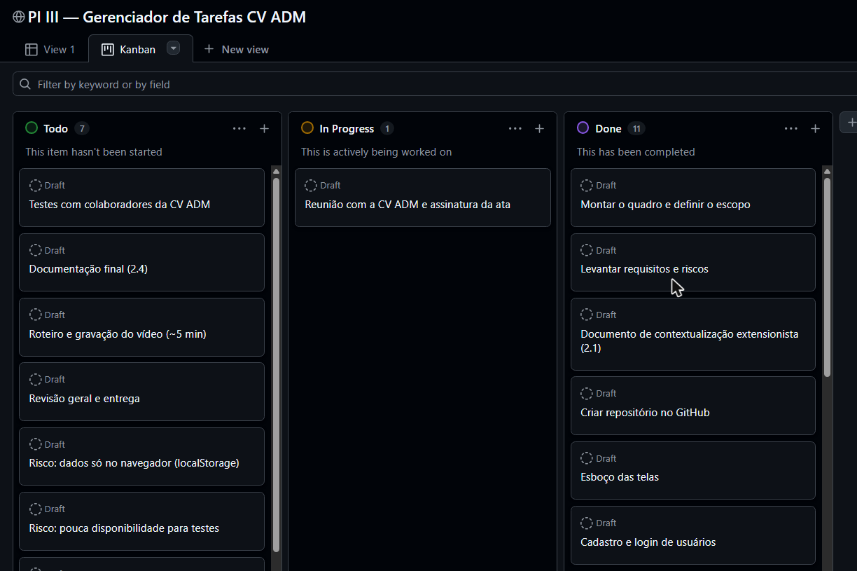
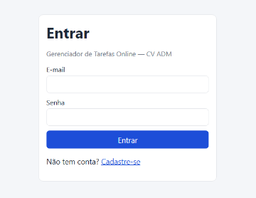
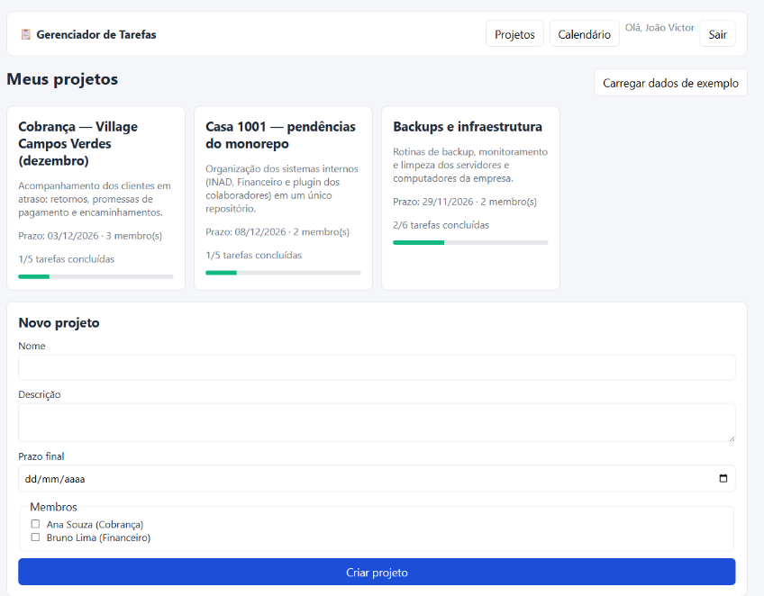
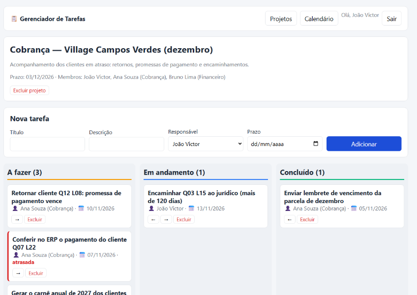
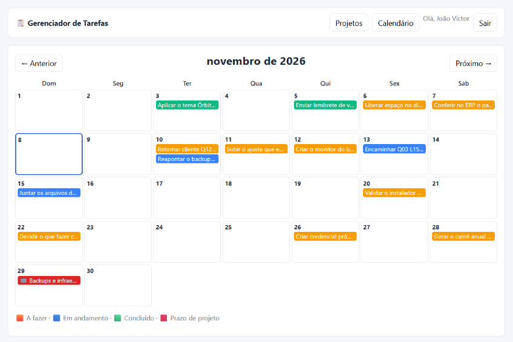

Pontifícia Universidade Católica de Goiás
Coordenação Ensino a Distância – CEAD
Escola Politécnica e de Artes
Análise e Desenvolvimento de Sistemas
JOÃO VICTOR DIAMANTINO CARDOSO
Projeto Integrador III–B
Organização parceira: TR Enterprises Ltda. (1001 Negócios Imobiliários)
Goiânia, 2026
Este documento apresenta o desenvolvimento do Sistema Gerenciador de Tarefas Online, realizado no Projeto Integrador III–B do curso de Análise e Desenvolvimento de Sistemas da PUC Goiás. O projeto foi conduzido como atividade de extensão universitária, em parceria com a TR Enterprises Ltda. (1001 Negócios Imobiliários), em Goiânia.
O objetivo foi aplicar conceitos de Gerência de Projetos de Software e de Desenvolvimento Web para atender a uma demanda concreta da organização: organizar, distribuir e acompanhar as tarefas e os projetos internos da equipe. O resultado é um sistema web com cadastro e autenticação de usuários, projetos com prazos e membros, tarefas atribuídas, quadro Kanban e calendário de prazos.
O documento está organizado da seguinte forma: a seção 2 apresenta a contextualização extensionista; a seção 3 descreve a solução proposta; as seções 4 e 5 tratam da metodologia e da gestão do projeto; as seções 6 e 7 descrevem as funcionalidades e a arquitetura; a seção 8 apresenta os testes; e as seções 9 e 10 trazem os desafios, as melhorias futuras e as considerações finais.
| Sistema publicado | https://dimasaas.github.io/pi-3b-gerenciador-de-tarefas/ |
|---|---|
| Repositório (código-fonte) | https://github.com/Dimasaas/pi-3b-gerenciador-de-tarefas |
| Gestão do projeto | https://github.com/users/Dimasaas/projects/2 |
| Razão social | TR Enterprises Ltda. (1001 Negócios Imobiliários) |
|---|---|
| CNPJ | 60.478.165/0001-03 |
| Endereço | Rua CV 21, Quadra Área Margem Esquerda 900m, Sala 02, Chácara Paraíso, Residencial Village Campos Verdes — Goiânia/GO |
| Natureza | Organização privada: administração de obras e empreendimentos imobiliários |
O trabalho foi realizado junto à equipe da imobiliária 1001 Negócios Imobiliários (TR Enterprises Ltda., CRECI-GO 44685-J), que atua há oito anos na Grande Goiânia. A 1001 cuida da venda de lotes em loteamentos como o Village Campos Verdes e, em breve, o Setor Comercial Salutis, da cobrança dos clientes que compraram de forma parcelada, da intermediação de imóveis e da administração de aluguéis.
O aluno integra a equipe da 1001 desde junho de 2026, como Auxiliar Administrativo, e atua no desenvolvimento dos sistemas internos da imobiliária.
O problema foi identificado na cobrança da carteira de clientes inadimplentes do Village Campos Verdes, com cerca de 330 vendas parceladas acompanhadas pela equipe. A única fonte de informação era o relatório de inadimplência em PDF emitido pelo ERP da empresa (ProUAU). A equipe lia esse relatório e fazia os contatos por WhatsApp. Cada contato gerava uma tarefa de acompanhamento, como retornar em uma data combinada, conferir se uma promessa de pagamento foi cumprida ou encaminhar o caso ao jurídico. Essas tarefas não tinham onde ficar registradas, e cada novo relatório substituía o anterior sem guardar o histórico. Isso causava:
A solução desse caso foi desenvolvida em etapas pelo próprio aluno. Em julho de 2026, uma ferramenta passou a ler os relatórios de inadimplência em PDF e a transformar os dados em um banco SQL (SQLite), guardando cada relatório como uma "foto" datada da carteira. Sobre esse banco foram criadas uma fila de cobrança priorizada e uma lista das tarefas do dia, com o registro do desfecho de cada contato. Depois, a leitura do PDF foi substituída pela integração direta com a API do ERP, dando origem ao painel de cobrança usado hoje pela empresa.
Essa experiência mostrou que organizar as demandas em tarefas com responsável, prazo e status resolve o problema. As demais áreas da empresa, como vendas, demarcação de lotes, documentação de contratos, rotinas de backup e projetos internos, têm a mesma necessidade, mas não contam com uma ferramenta para isso.
Objetivo geral: desenvolver um sistema web para a equipe da organização parceira organizar, distribuir e acompanhar as tarefas e os projetos internos da empresa.
Objetivos específicos:
A interação com a organização parceira foi registrada em ata de reunião, assinada eletronicamente pelo aluno e pelo diretor Tales Rinald e Sousa, representante da organização, por meio do assinador gov.br (ITI). A ata registra o problema discutido, o escopo mínimo acordado e os encaminhamentos de validação, e está no Apêndice A.
A solução é um sistema web de página única, acessado pelo navegador sem instalação. Cada colaborador cria sua conta e passa a ver os projetos dos quais é membro. Dentro de cada projeto, as tarefas são criadas com um responsável e um prazo, e avançam por um quadro Kanban até a conclusão. Um calendário mensal reúne os prazos de todas as tarefas e projetos do usuário.
O foco do desenvolvimento foi a modelagem funcional e um protótipo navegável e funcional, como previsto na proposta do Projeto Integrador. Os dados ficam armazenados no próprio navegador, o que permite demonstrar todo o fluxo sem depender de servidor; a evolução para um back-end compartilhado está descrita na seção 9.
| Código | Requisito |
|---|---|
| RF01 | O sistema deve permitir o cadastro de usuários com nome, e-mail e senha, sem e-mails repetidos. |
| RF02 | O sistema deve autenticar o usuário por e-mail e senha e permitir sair da sessão. |
| RF03 | O usuário deve poder criar projetos com nome, descrição, prazo final e membros. |
| RF04 | O usuário deve ver apenas os projetos dos quais é membro, com o progresso de cada um. |
| RF05 | O usuário deve poder criar tarefas com título, descrição, responsável (membro do projeto) e prazo. |
| RF06 | As tarefas devem ser acompanhadas em um quadro Kanban com as colunas "A fazer", "Em andamento" e "Concluído". |
| RF07 | O sistema deve destacar as tarefas atrasadas (prazo vencido e não concluídas). |
| RF08 | O sistema deve exibir um calendário mensal com os prazos das tarefas e dos projetos. |
| RF09 | O usuário deve poder excluir tarefas e o criador deve poder excluir o projeto. |
| Código | Requisito |
|---|---|
| RNF01 | O sistema deve funcionar no navegador, sem instalação, inclusive em telas de celular. |
| RNF02 | As senhas não devem ser armazenadas em texto puro (uso de hash SHA-256). |
| RNF03 | Todo texto digitado pelo usuário deve ser tratado antes de ser exibido, evitando a injeção de código (XSS). |
| RNF04 | A interface deve estar em português e usar o formato de data brasileiro (dd/mm/aaaa). |
| RNF05 | O código deve ser simples e sem dependências externas, para facilitar a manutenção. |
O projeto adotou uma abordagem ágil inspirada no Scrum e no Kanban, como recomendado pela proposta do Projeto Integrador. O trabalho foi dividido em quatro sprints semanais, entre 9 de novembro e 7 de dezembro de 2026, cada uma com uma meta clara: parceiro e planejamento, protótipo e base do sistema, funcionalidades e entrega.
O desenvolvimento foi incremental: primeiro a autenticação, depois os projetos, as tarefas, o Kanban e o calendário, com cada incremento testado no navegador antes do próximo. O escopo mínimo foi definido junto à organização parceira e registrado em ata, o que serviu de critério de aceitação. Como o projeto foi desenvolvido individualmente, as cerimônias do Scrum foram simplificadas: o planejamento e a revisão de cada sprint foram feitos sobre o quadro de gestão, e o andamento foi registrado movendo os cartões entre as colunas.
Todo o código foi versionado com Git e publicado no GitHub, com mensagens de commit descritivas, e o sistema foi publicado no GitHub Pages, o que permite que o parceiro e o professor acessem a versão mais recente a qualquer momento.
A gestão foi feita no GitHub Projects, ligado ao repositório do sistema, em https://github.com/users/Dimasaas/projects/2. Cada atividade é um cartão com status, sprint, tipo (Documentação, Desenvolvimento, Gestão, Parceiro ou Risco) e prazo. O quadro tem duas visões: uma tabela, com todos os campos, e um Kanban, com as colunas Todo, In Progress e Done (Figura 1).

Fonte: elaborado pelo autor (2026).
| Sprint | Atividades |
|---|---|
| Sprint 1 — Parceiro e planejamento (09/11 a 15/11) | Montar o quadro e definir o escopo; reunião com a TR Enterprises e assinatura da ata; levantar requisitos e riscos; documento de contextualização extensionista. |
| Sprint 2 — Protótipo e base (16/11 a 22/11) | Criar o repositório; esboço das telas; cadastro e login de usuários; criação de projetos com prazo e membros. |
| Sprint 3 — Funcionalidades (23/11 a 29/11) | Tarefas (criar, atribuir e concluir); quadro Kanban com arrastar e soltar; calendário de prazos; testes com colaboradores da TR Enterprises. |
| Sprint 4 — Entrega (30/11 a 07/12) | Publicar no GitHub Pages; documentação final; roteiro e gravação do vídeo; revisão geral e entrega. |
| Risco | Impacto | Mitigação |
|---|---|---|
| Dados armazenados apenas no navegador | Médio | Deixar documentado como limitação e planejar a evolução para API com banco de dados. |
| Pouca disponibilidade dos colaboradores para testes | Médio | Agendar a validação com antecedência e preparar dados de exemplo para agilizar a demonstração. |
| Prazo curto (quatro semanas) e desenvolvimento individual | Alto | Escopo mínimo fechado em ata, sprints semanais e tecnologia sem etapa de build. |
Ao abrir o sistema, o usuário vê a tela de login (Figura 2) e pode alternar para o cadastro. O cadastro exige nome, e-mail válido e senha de pelo menos seis caracteres, e recusa e-mails já cadastrados. A senha é guardada como hash SHA-256, nunca em texto puro. Em caso de e-mail ou senha incorretos, o sistema exibe uma mensagem de erro sem indicar qual dos dois está errado.

Fonte: elaborado pelo autor (2026).
A tela inicial lista os projetos dos quais o usuário é membro (Figura 3). Cada cartão mostra a descrição, o prazo final, o número de membros e uma barra de progresso com as tarefas concluídas. Abaixo, um formulário permite criar um novo projeto, escolhendo os membros entre os usuários cadastrados. Quem cria o projeto entra automaticamente como membro e é o único que pode excluí-lo.

Fonte: elaborado pelo autor (2026).
Ao abrir um projeto, o usuário vê seus dados, o formulário de nova tarefa e o quadro Kanban (Figura 4). Cada tarefa tem título, descrição, responsável (escolhido entre os membros do projeto) e prazo, que não pode passar do prazo final do projeto. Toda tarefa nova começa em "A fazer". Para mudar o status, o usuário pode arrastar o cartão para outra coluna ou usar os botões de seta, o que também funciona em celulares. Tarefas com prazo vencido e não concluídas ganham uma borda vermelha e a marcação "atrasada".

Fonte: elaborado pelo autor (2026).
A aba Calendário mostra o mês com os prazos de todas as tarefas e projetos do usuário (Figura 5). As tarefas aparecem na cor do seu status (laranja para "A fazer", azul para "Em andamento" e verde para "Concluído") e o prazo final de cada projeto aparece em vermelho. O dia atual fica destacado, e os botões "Anterior" e "Próximo" navegam entre os meses.

Fonte: elaborado pelo autor (2026).
Para a demonstração ao parceiro e para o vídeo, o botão "Carregar dados de exemplo" cria três projetos baseados em demandas reais da empresa: a cobrança dos clientes em atraso do Village Campos Verdes, a organização dos sistemas internos em um único repositório e as rotinas de backup e infraestrutura. Os prazos são calculados a partir da data do clique, e os clientes e colegas usados no exemplo são fictícios, para proteger dados pessoais (LGPD).
O sistema foi construído com HTML, CSS e JavaScript puros, sem frameworks e sem etapa de build. A escolha reduz as dependências, facilita a manutenção e permite publicar o sistema como um site estático no GitHub Pages. A aplicação é de página única: um único arquivo JavaScript desenha cada tela a partir do estado atual e trata os cliques e envios de formulário por delegação de eventos.
| Arquivo | Responsabilidade |
|---|---|
index.html | Estrutura da página e carregamento do estilo e do script. |
style.css | Aparência, layout responsivo, quadro Kanban e calendário. |
app.js | Telas, regras de negócio, autenticação e persistência dos dados. |
| Ferramenta | Uso no projeto |
|---|---|
| Git e GitHub | Versionamento e repositório remoto do código-fonte. |
| GitHub Pages | Publicação do sistema na internet. |
| GitHub Projects | Gestão das atividades, sprints, prazos e riscos. |
| Web Crypto API | Geração do hash SHA-256 das senhas e dos identificadores únicos. |
| localStorage | Armazenamento dos dados no navegador. |
Os dados são guardados em três coleções, com relacionamentos por identificador:
| Coleção | Campos | Relacionamentos |
|---|---|---|
| Usuário | id, nome, e-mail, hash da senha | — |
| Projeto | id, nome, descrição, prazo final, criador, membros | Criador e membros referenciam usuários (N:N) |
| Tarefa | id, projeto, título, descrição, responsável, prazo, status | Pertence a um projeto (N:1); responsável é um usuário (N:1) |
O status de uma tarefa assume um de três valores: todo ("A fazer"), doing ("Em andamento") e done ("Concluído"). Ao excluir um projeto, todas as suas tarefas também são excluídas.
Os testes foram funcionais e manuais, executados no navegador sobre o sistema rodando localmente. Cada caso de teste corresponde a um requisito:
| # | Caso de teste | Resultado |
|---|---|---|
| 1 | Cadastrar um usuário e entrar no sistema | Aprovado |
| 2 | Entrar com senha errada | Aprovado: acesso recusado com mensagem de erro |
| 3 | Criar projetos e carregar os dados de exemplo duas vezes | Aprovado: 3 projetos e 16 tarefas, sem duplicar |
| 4 | Mover uma tarefa de "A fazer" para "Em andamento" | Aprovado |
| 5 | Destacar tarefa com prazo vencido | Aprovado |
| 6 | Entrar com outro usuário, membro de apenas um projeto | Aprovado: vê somente o projeto em que é membro |
| 7 | Exibir os prazos no calendário | Aprovado: 15 prazos exibidos no mês |
| 8 | Sair do sistema e voltar à tela de login | Reprovado na primeira execução (abria a tela de cadastro); corrigido e aprovado |
A validação com a organização parceira está prevista para 1º de dezembro de 2026, conforme a ata de reunião: o sistema será apresentado à equipe, com retorno da diretoria até 4 de dezembro.
O principal desafio foi transformar um problema já vivido pela empresa em requisitos genéricos, que sirvam para qualquer equipe e não apenas para a cobrança. Outro desafio foi o prazo curto com desenvolvimento individual, resolvido com um escopo mínimo fechado em ata e uma tecnologia sem etapa de build. Também foi preciso cuidar da proteção de dados: como o repositório é público, nenhum dado real de cliente ou detalhe sensível da infraestrutura da empresa foi incluído, e os exemplos usam pessoas e clientes fictícios.
As melhorias previstas para uma próxima versão são:
O projeto atingiu o objetivo de desenvolver um sistema web de gerenciamento de tarefas para uma organização real, cumprindo todas as funcionalidades mínimas da proposta: cadastro e autenticação, projetos com prazos e membros, tarefas com acompanhamento até a conclusão, quadro Kanban e calendário de prazos.
Do ponto de vista extensionista, o trabalho partiu de um problema concreto da TR Enterprises e aplicou uma solução que a própria empresa já havia validado em uma área, a cobrança, levando-a para as demais equipes. Do ponto de vista acadêmico, o projeto permitiu aplicar na prática a gestão ágil, com sprints, quadro Kanban e controle de riscos, e o desenvolvimento web, do levantamento de requisitos à publicação.
GITHUB. GitHub Docs: about Projects. Disponível em: https://docs.github.com/en/issues/planning-and-tracking-with-projects. Acesso em: 8 nov. 2026.
MDN WEB DOCS. Web Crypto API. Mozilla, 2026. Disponível em: https://developer.mozilla.org/pt-BR/docs/Web/API/Web_Crypto_API. Acesso em: 8 nov. 2026.
MDN WEB DOCS. Window.localStorage. Mozilla, 2026. Disponível em: https://developer.mozilla.org/pt-BR/docs/Web/API/Window/localStorage. Acesso em: 8 nov. 2026.
PRESSMAN, R. S. Engenharia de Software: uma abordagem profissional. 8. ed. Porto Alegre: McGraw-Hill, 2014.
SCHWABER, K.; SUTHERLAND, J. O Guia do Scrum. 2020. Disponível em: https://scrumguides.org. Acesso em: 8 nov. 2026.
SOMMERVILLE, I. Engenharia de Software. 9. ed. São Paulo: Pearson, 2011.
A ata de reunião assinada eletronicamente pelo aluno e pelo representante da TR Enterprises acompanha este documento no arquivo Ata-Reuniao-TR-Enterprises_assinado.pdf. As assinaturas podem ser verificadas em https://validar.iti.gov.br.